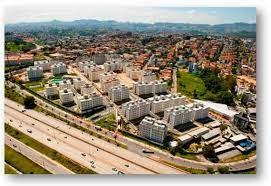

GALO DOIDO VISITA ESCOLA ESTADUAL NO BAIRRO CAMARGOS!
05/10/2022
Hoje o mascote do Atlético Mineiro visitou a Escola Estadual Elpidio Aristides de Freitas, localizada no
bairro Camargos, zona oeste de Belo Horizonte.
O mascote levou alguns presentes para as crianças,
como mochilas do Instituto Galo, cadernos personalizados, réguas, canetas e lápis, todos os itens
personalizados para os fãs do time mineiro.
01/11/2022
Origem do Nome:
Referência a Salomão Camargos, proprietário da área onde foram feitos os primeiros loteamentos.
Outros Nomes:
Vila Magnesita, bairro Batista, bairro Governador Benedito Valadares, bairro Atalaia
Origem do Bairro:
Primeiros loteamentos aprovados na década de 1920. Apenas em 1989, o bairro recebeu a denominação
oficial de Camargos.
Referências urbanas do passado:
Fazenda do Batista
01/11/2022
O bairro Camargos fica em Belo Horizonte, na divisa com Contagem e pertence a regional Noroeste. É um
bairro bem localizado, com ótima infra-estrutura, pouco índice de violência e com excelentes estabelecimentos
comerciais, e é um bairro tranquilo, com silêncio total pra descansar, estudar além de ser um ambiente familiar.

JornaldoBairro®
Edifício Gerais - Papa João Paulo II, 4001 - 1º andar
Serra Verde, Belo Horizonte - MG, 31630-901